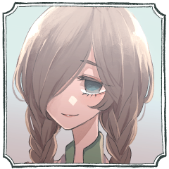
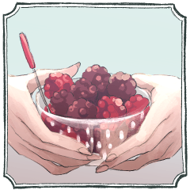
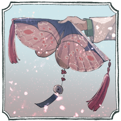
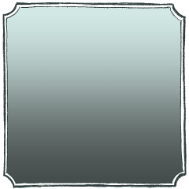
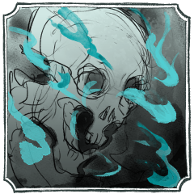
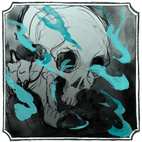

出口なし
GM
■PC1 推奨：自由
・使命：【記憶を取り戻す】
・導入：
あなたは数か月前PC2に救われ、この病院に入院している患者である。
何か大きな罪を犯したのに、それが何なのか思い出せない。
何らかのショックによる一時的な記憶障害だろうと医師は言う。
あなたの【使命】は記憶を取り戻すことである。
GM
それでは改めてご紹介のほどお願いいたします。
矢矧有
この病院の入院患者、と言えば聞こえはいいですがね。
矢矧有
居候というか、穀潰しというか。迷惑をかけはするものの、きちんと還元できているかというと、どうですかね。
矢矧有
なんでここにいるのやら、俺自身も疑問に思っているくらいですよ。
矢矧有
それもこれも、全てあの医者のせいだ。あの女さえいなければ、俺は……。
矢矧有
何か大きな罪を犯したはずなのに。罪の意識だけが残って、中身を覚えていない。
矢矧有
……そんなもの、思い出す必要がありますかね
矢矧有
そう思ってはいても、それを思い出すためにここにいる。ままならないものです。
矢矧有
俺の話は、こんなところでいいでしょう。人生の時間は限られている。俺の話を聞くよりも、もっと有益なことをするべきだ。
GM
■PC2 推奨：自由
・使命：【PC1に記憶を取り戻させる】
・導入：
あなたはこの病院の医師である。何らかの理由で隠れ潜む忍者であったあなたは、同情か仁愛か気紛れか、数か月前にPC1を匿い、その主治医をつとめてきた。
体の傷が癒えたというのに、PC1は何らかのショックで起きた記憶障害に悩んでいる。
あなたの【使命】はPC1に記憶を取り戻させることだ。

甕覗揺
甕覗揺（かめのぞき ゆすら）です。
甕覗揺
小さい島ですが、医者をしています。
専門は……ホスピス。
ですが、この島だと私しか医師がおりませんので……。
甕覗揺
カウンセリングも応急処置も、簡単な手術も。
なぁんでも。
甕覗揺
……私の役目は患者のみなさんを心から安心させてあげること。
甕覗揺
出来る、出来ないではなく。
私自身の意志で。私自身の心で。
甕覗揺
そうすることが、きっと……。
心に届くと信じています。
GM
では今回このお二方で「出口なし」やっていこうと思います。
GM
■今回予告
とある地方の山中。ぽつりと建つ古びた木造の病院の入院病棟、2階の203号室。
ベッドに腰掛けた患者の傍らに、ひとりの医師が腰掛けて話を聞いている。
患者は言う。何か大きな罪を犯したのに、それが何なのか思い出せない。
静かな病室で、カウンセリングは続く。
病室の外に人影はない。長い廊下を見渡しても、階下に降りたとしても。
生きて動く者は一人もいない。
ただ、203号室から、話し声がぽつぽつと無人の廊下に漏れ聞こえている。
（――数か月前、忍務の帰途で大怪我を追った忍者をこの病院の医師の1人が保護した。
隠れ潜む忍者であったその医師は、同情か仁愛か気紛れか、傷ついた忍者が身元を隠して心身を癒せるように尽力した。
病院の人々は患者をあたたかく遇し、忍者は生まれて初めて味わうような静かで安らかな日々を過ごした。
その束の間の静穏が、壊れる日までは）
その日壊れたものは、ほんとうは何だったのだろう。
真実は何処に？
――さあ、先生。あなたの患者が待っています。
GM
生い茂る青葉が陽光を遮り、さらさらと吹き抜ける風に揺らされ、
GM
病室の開け放たれたカーテンも同じように揺れている。
GM
近く遠く、おんなの立てる小さな足音が聞こえてくる。
甕覗揺
極力床を歩く音を立てないような素材の靴。
それでもやや軋む木造の廊下。
矢矧有
基本的には、あの女が来る時間は決まっている。医師なのだから当然だ。
矢矧有
もっとも、それ以外に突然来訪することもあるのだが。
甕覗揺
定刻通り。
それより少し遅れるのもいつものこと。
それより早かったり、急だったりするのも。
甕覗揺
換気のために少し開け放たれている、引き戸の前に姿を現して。
矢矧有
返事を返さない。女の方を見ない。ベッドサイドにある引き出しから、古新聞紙を取り出した。
矢矧有
女に視線は向けない。そのまま古紙に竹定規を当て、折り目を付ける。
甕覗揺
ベッド横のパイプ椅子を引き寄せて。
まずはその手元を眺めている。これもいつものこと。
矢矧有
「体調はすこぶる良好です。薬が効いているのか、精神的にも取り乱すようなことはない」
矢矧有
「俺はもう、退院してもいいんじゃないでしょうかね」
甕覗揺
魚の煮物。
やわらかめのご飯。
青菜のおひたし。
夏野菜の煮びたし。
おろし大根にしらす。
たまごやき。
矢矧有
今度は垂直方向に折り目を付ける。正方形に整える。
甕覗揺
「ご飯が美味しい、っていうのが退院の目安かと」
甕覗揺
「指先の感覚、皮膚の心地よさ、におい……。
あなたの五感が、あなたにとって心地がよいかどうか」
甕覗揺
「そういうのをひっくるめて、お加減。です」
矢矧有
「指先の感覚が薄く、皮膚が心地悪く、匂いが分からず、五感の全てが不快であったとしても」
矢矧有
「問題なく社会生活を送れる能力があるなら、それでいいんじゃないですかね？」
甕覗揺
いつも手元や顔を見ているねむたげな眼が、その日はふいに逸らされて。
矢矧有
几帳面に紙の角を合わせて、折り目を爪でしごく。
矢矧有
慣れた様子で、また紙の端を合わせる。開いて、折って、折って。
GM
◆メインフェイズ第一サイクル第一シーン シーンプレイヤー：甕覗揺
GM
先に１点以上の生命力を喪失した者が脱落し、勝ち残ったものが勝者となります。
GM
そういう精神世界的なカウンセリングのRPを今回戦闘というデータで表現する形になります。
GM
ではラウンド１のプロットオープンをお願いします！
[ 矢矧有 ] がダイスシンボルを公開。出目は 5 です。
[ 甕覗揺 ] がダイスシンボルを公開。出目は 4 です。
GM
◆ラウンド１
プロット５：矢矧有 プロット４：甕覗揺
矢矧有
■奥義
《松上之鶴》
指定特技 ：骨法術
エフェクト：範囲攻撃/撃ち/人数限定
GM
揺さんに３点のダメージですね。範囲攻撃なので任意分野。
甕覗揺
■ 奥義
《拍子・幽主或蝶番》
指定特技 ：憑依術
エフェクト：絶対防御/くらまし/防御低下
GM
矢矧さんと揺さんの奥義情報が相互に渡ります。
GM
以降からそれぞれに指定特技による奥義破りが可能になります。
GM
というわけで絶対防御により範囲攻撃の３点ダメージは無効化。
矢矧有
「記憶がいつ戻るかは分からない。それこそ一生戻らないかもしれない」
矢矧有
「それでも別に生きていける。退院して、普通の生活を送っていれば、時間が罪の意識を薄れさせるだろう」
矢矧有
「なら、治療する必要はない。俺をここに留めているのは、あんたの都合じゃないのか？」
甕覗揺
私の命は、私の人生は、私のものではない ──
甕覗揺
いつでも私をねじ伏せて出ていけたでしょう？
甕覗揺
2D6>=5 （判定：詐術） (2D6>=5) ＞ 8[2,6] ＞ 8 ＞ 成功
GM
謀術以外で判定する場合、-1の修正がつき、ファンブル値が1上昇します。
矢矧有
2D6>=7 （判定：意気） (2D6>=7) ＞ 4[1,3] ＞ 4 ＞ 失敗
[ 矢矧有 ] 頑健 : 2 → 1
GM
頑健から減ります。矢矧さんは１点ダメージを受けて脱落。
甕覗揺
どのみち、どこにも行き場のない人生だった。
どこにも、出口のない命だった。
甕覗揺
生まれてこの方。
私自身を生きたことがない。
甕覗揺
常夜の秘術。
人生を、始まりの女神に捧げる代償に手に入れた。
甕覗揺
いつかこの身。死後、未来永劫。
今生も来世も救われることはないでしょう。
甕覗揺
『日にあなたの国の者を千人殺す』と。
嘆いた始まりの女神の怒りと悲しみを鎮めるために。
甕覗揺
神に捧げた人生のすべてを投げうって。
あなたへ、本当のあなたを取り戻します。
GM
ではプライズ『記憶』は甕覗さんから矢矧さんに渡ります。
GM
入手によってプライズの秘密が手に入るため、そのままプライズの秘密を公開いたします。
GM
【秘密：記憶】
このプライズの真の名称は『罪』である。下記文中の「あなた」はその時点でのこのプライズの持ち主を指す。
このプライズを手に入れたタイミング（配布時を含む）が訪れるたび、持ち主は下の「」内の文章中の、任意の一つの［ ］の中を消して好きに書き換えてよい。この時、書き換えた［ ］についている番号を消去すること。番号の消えた［ ］内は以降上書きされない。
「あなたは(1)［3日前］、(2)［あなたの所在を突き止めた追手が迫っている事を知り、あなたの情報を知る者を消す］ために、この病院の人々を全て殺した。あなたは(3)［慣れた手際で、人形のように首を落として］彼らを殺した。
目の前の相手だけは殺さなかった。［どうしてか、ただ1人安心できる相手だった］からだ。記憶の混乱の治療にはもっと時間を掛けたかったが、今日までが限界だった。あなたは(5)[痕跡を消すため、既に病棟の下階に火を放った]。
これこそが、これだけが、(6)［ 真実 ］である。」
GM
えーと、戦闘終了周りの演出かな。プライズを得た矢矧さんの反応から頂いて、
GM
それが済んだらそのまま矢矧さんの手番に入りましょう。

甕覗揺
零れていくようなそれを手のひらで受け止める。
矢矧有
今、手元にあるのは3日前の新聞だ。毎日のように差し入れられた色鮮やかな包装紙も、瑞々しい野苺も、全て過去の記憶。
矢矧有
「俺があんたにねじ伏せられる、かもしれない」
甕覗揺
折り紙が下手だった。
折ったカエルを跳ねさせるのも。
紙飛行機を飛ばすのも。
甕覗揺
「私ったら、スイカ2つ持つだけで汗だくになるのに」
甕覗揺
たまにお裾分けされるスイカ。
今年はまだ食べてない。
GM
◆メインフェイズ第一サイクル第二シーン シーンプレイヤー：矢矧有
[ 甕覗揺 ] がダイスシンボルを公開。出目は 1 です。
[ 矢矧有 ] がダイスシンボルを公開。出目は 5 です。
GM
◆ラウンド１
プロット５：矢矧有 プロット１：甕覗揺
矢矧有
きちんと整えられた白衣の胸元に手を伸ばす。体を持ち上げそうな勢いで掴み上げる。
矢矧有
「あんたは俺の主治医なのに、俺の話を聞いてくれないんだな」
矢矧有
「俺が言っていることは、精神が錯乱した患者の妄言なのか？ それはそうだ。正しいよあんたは」
矢矧有
「俺はあんたに、話を聞いてもらいたいんだ」
GM
ではラウンド終末。誘導が使えるタイミングですが、コストが足りません。
[ 矢矧有 ] がダイスシンボルを公開。出目は 4 です。
[ 甕覗揺 ] がダイスシンボルを公開。出目は 2 です。
甕覗揺
2D6>=8 （判定：歩法） (2D6>=8) ＞ 4[1,3] ＞ 4 ＞ 失敗
矢矧有
2D6>=8 （判定：千里眼の術） (2D6>=8) ＞ 12[6,6] ＞ 12 ＞ スペシャル(【生命力】1点か変調一つを回復)
GM
では絶対防御に対する奥義破りが通りまして、揺さんに３点のダメージ。
[ 甕覗揺 ] 器術 : 1 → 0
[ 甕覗揺 ] 忍術 : 1 → 0
[ 甕覗揺 ] 戦術 : 1 → 0
[ 矢矧有 ] 頑健 : 1 → 2
甕覗揺
神に捧げた身を守るのは。
私自身の力ではない。
甕覗揺
身が揺れるように、足がふらりと男の技を躱そうと動く ──
矢矧有
木造の床に裸足で降りる。腰を落とし、拳を構える。足裏が床に体重を伝える。
矢矧有
その重い構えとは対象的に、軽く踏み込む。鶴が翼を広げるように、水面から飛び立つように。
矢矧有
柔らかく、力強く、羽ばたくように。
ただ、真っ直ぐな拳が空気の壁を割る。
矢矧有
──松の上にいる鶴って、縁起がいいものなんですよ。花札なんかにも描かれているでしょう。
矢矧有
いつ話したのかは覚えていない。自分がどこで話したのかも覚えていない。
矢矧有
──でもね、鶴って、木の上には止まらない鳥なんです。よく似たコウノトリと勘違いされたとか。
矢矧有
──存在しないんですよ。そんなおめでたいものなんて。
矢矧有
折り鶴を折っている。折るという漢字と、祈るという漢字は似ている。

甕覗揺
真っ直ぐな拳が空気の壁を割って。
香の粉を散らす。

甕覗揺
その一撃がその身に届く、前に。
女の足元に影が伸びた。

甕覗揺
女をかき抱くように、纏わる躯。
常夜の巫女の宿命そのもの。
甕覗揺
その身が女の命を、人生を、すべてを宿命に縛り付けて離さない。
甕覗揺
躯が、その一撃に弾かれるように掻き消える。
GM
【秘密：記憶】
このプライズの真の名称は『罪』である。下記文中の「あなた」はその時点でのこのプライズの持ち主を指す。
このプライズを手に入れたタイミング（配布時を含む）が訪れるたび、持ち主は下の「」内の文章中の、任意の一つの［ ］の中を消して好きに書き換えてよい。この時、書き換えた［ ］についている番号を消去すること。番号の消えた［ ］内は以降上書きされない。
「あなたは(1)［3日前］、［忍務のため、病院の地下施設に侵入した。この病院の実状は臓器農場だった。末期患者の体から内臓を抜いて売り、患者には豚の内臓を移植し、再びそれを人間の内臓として売り捌く施設だ。十分なデータと情報を手入した後証拠を消す必要があった］ために、この病院の人々を全て殺した。あなたは(3)［慣れた手際で、人形のように首を落として］彼らを殺した。
目の前の相手だけは殺さなかった。［どうしてか、ただ1人安心できる相手だった］からだ。記憶の混乱の治療にはもっと時間を掛けたかったが、今日までが限界だった。あなたは(5)[痕跡を消すため、既に病棟の下階に火を放った]。
これこそが、これだけが、(6)［ 真実 ］である。」
GM
演出の続きとしては一撃を受けたあとの揺さんの反応からで。
矢矧有
軽くひっくり返して、生きていることを確認する。
矢矧有
殺すつもりはなかった、が、手加減したつもりもない。
矢矧有
女の軽い体を抱え、先程まで自分が寝ていたベッドに横たえる。
矢矧有
数秒、そのままぼんやり外を見て、女を振り返った。
甕覗揺
汗だくのまま、覚醒する。
虚ろな目が男をとらえた。
矢矧有
「患者のベッドでぐーすか熟睡とは、ふてぇ先生だ」
甕覗揺
いつも聞こえている死者の声が聞こえない。
初夏の風に鳴る、気の早い風鈴の音だけ。
甕覗揺
こんな風にベッドに眠ったのはいつぶりだろう。
GM
◆メインフェイズ第二サイクル第一シーン シーンプレイヤー：甕覗揺
甕覗揺
その手を自身の左胸へ導く。
そこにも五つ、孔が空いている。
甕覗揺
肌はひやりと冷たいが、薄皮一枚下で鼓動が脈打つ。
甕覗揺
「……孔が孔となったのは。あの人が死んだとき」
甕覗揺
「孔が空くと決まったのは、生まれた時から……」
矢矧有
「私の命は、私の人生は、私のものではない」
甕覗揺
「私は死後、身も心も魂も。
黄泉の国でとこしえにさ迷います」
矢矧有
「俺の親は、俺に興味がありませんでした。俺は何をやっても駄目な男で、弟が優秀だったものですから」
矢矧有
「だから、大きな病気になった時に、普通の病院に入院させた」
矢矧有
この病院の実状は臓器農場だった。だが、それが何年前からそうだったのかは分からない。
矢矧有
「俺はまだ子供で、その時に何かあったのか、何もなかったのか、分からない」
矢矧有
「もしかすると俺の記憶なんかとっくになくて、そもそもこの体は人間ですらないかもしれない」
矢矧有
「俺の記憶は、俺の中身は、誰のものなんだろうな」
甕覗揺
「医師の見解からしても、私自身からも容易くあなたにかけられる言葉ではありません」
甕覗揺
「だから……覚えておこうと思います。
あなたが話してくれたことを」
甕覗揺
矢矧有に感情判定を行います。
使用特技は医術。
甕覗揺
2D6>=5 （判定：医術） (2D6>=5) ＞ 6[2,4] ＞ 6 ＞ 成功
甕覗揺
ET 感情表(2) ＞ 友情（プラス）／怒り（マイナス）
矢矧有
ET 感情表(6) ＞ 狂信（プラス）／殺意（マイナス）
甕覗揺
身体に空いた十の孔に触れられて。
胸に吹く初夏の風が連れてくるのは。
甕覗揺
こんな人生への怒り。
身の内を突き上げる、渇望。
甕覗揺
そうして今、むしろようやく。
この命を捧げた女神の御心に触れられた気がする。
甕覗揺
本当の誇りを手に入れられたのは。
きっとあなたのおかげだから。
矢矧有
触れたままの胸に、その孔の淵に軽く爪を立てる。
矢矧有
「あんたが俺を見てくれるなら、あんたが俺を覚えてくれるなら」
矢矧有
知らない男が穿った孔を上書きするように。肉が裂ける。血が滲む。
甕覗揺
忍がこの傷に耐えられぬわけはない。
だからこの声は、
矢矧有
孔をそのまま辿ろうとしたが、肋骨に阻まれる。
矢矧有
軽く肋骨を引っ掻いて、拳を握ろうと──乳房を、引きちぎろうとする。
甕覗揺
脂肪と肉の剥がれる音がして、乳房が引きちぎれる。
矢矧有
心臓に触れたい。心臓に触れるなんてことはできない。傷を残したい。そんなことはできない。自分を残したい。
矢矧有
指は肋骨の上を滑るように、脂肪と乳腺の塊を手中に収めた。
甕覗揺
血がふき零れる唇を指でぬぐって。
浅く息を吐いて横たわっている。
矢矧有
そこに孔があるか、前の男の痕があるか、見ている。
甕覗揺
乳房が剥ぎ取られてなお、孔は穿たれている。
矢矧有
屈み込む。血が滲む筋組織に穿たれた孔に、舌を這わせる。
甕覗揺
もはや神経の剥ぎ取られ、痛みしか与えられぬ傷口に粘膜を感じる術はない。
矢矧有
肉食獣が獲物を貪るように、骨を覆う肉を食い千切る。
甕覗揺
押し殺した声が漏れて、小さな悲鳴になる。
のけぞった白い喉が空気を求めて上下した。
矢矧有
体の奥。脂肪と肉と骨に守られた女の命に触れる。
矢矧有
その臓器をそっと撫でる。他人の指先に傷付けられていないか確かめるように。
甕覗揺
確かめる間もなく、黄泉の炎が血の海に沈む女の身体を持ち上げた。

甕覗揺
女の傷は癒える。
まだ死ぬ定めではない。
矢矧有
指を心臓を触った形のままにして、女の体を見上げる。
甕覗揺
女はとこしえに呪われて。
その命は女のものではない。
甕覗揺
屍忍を呼び出します。
矢矧有の奥義情報と居所を屍忍に譲渡します。
[ 甕覗揺 ] 器術 : 0 → 1
[ 甕覗揺 ] 忍術 : 0 → 1
[ 甕覗揺 ] 忍具 : 3 → 1
甕覗揺
黄泉の炎が孔を通り、引きちぎられた女の乳房を糸のように結ぶ。
甕覗揺
骨が継がれ、血の海がまっさらなシーツになる。
矢矧有
一度は手中に収めた心臓が、骨が、肉が、乳房が、手元を離れてゆく。
甕覗揺
ベッドに残され、呆然と女が空を見つめている。
甕覗揺
塞がり切らなかった傷を、剥き出しの胸にひとすじだけ残して。
GM
◆メインフェイズ第二サイクル第二シーン シーンプレイヤー：矢矧有
矢矧有
いや、正確には、殺してしまってもいいと思っていた。自分がこの女に、何よりも深い傷として残るのなら。
矢矧有
しかし、あれの指は心臓まで届いていて。この傷はわずかにひとすじのみ。
GM
ではそれぞれプロットをよろしくお願いいたします。
GM
はい、ではプロットの開示をお願いいたします。
[ 矢矧有 ] がダイスシンボルを公開。出目は 5 です。
[ 甕覗揺 ] がダイスシンボルを公開。出目は 4 です。
矢矧有
2D6>=6 （判定：骨法術） (2D6>=6) ＞ 9[3,6] ＞ 9 ＞ 成功
矢矧有
2D6>=6 （判定：骨法術） (2D6>=6) ＞ 9[4,5] ＞ 9 ＞ 成功
甕覗揺
2D6>=8 （判定：歩法） (2D6>=8) ＞ 8[3,5] ＞ 8 ＞ 成功
矢矧有
そのまま骨を掴んで引き寄せ、心臓ごと破壊しようと、正拳を叩き込む。
甕覗揺
目覚めたばかりのねむたげな目を瞬かせ。
ゆっくりとした足取りでベッドから起き上がった。
甕覗揺
あまりにゆっくりなのにもかかわらずそれを捕らえることは出来ない。
甕覗揺
2D6>=5 （判定：詐術） (2D6>=5) ＞ 6[1,5] ＞ 6 ＞ 成功
矢矧有
2D6-1>=6 （判定：意気） (2D6-1>=6) ＞ 4[1,3]-1 ＞ 3 ＞ 失敗
[ 矢矧有 ] 頑健 : 2 → 1
甕覗揺
背中に額を押し当てた、小さな呼気が温もる。
矢矧有
「スイカ2つ持つだけで、汗だくになるんじゃなかったのかい」
矢矧有
有無を言わさず、ねじ伏せる力があればよかったのに。
矢矧有
「自分の力じゃないなら……、出ていくのをねじ伏せられないな」
甕覗揺
そんな日々も。
今日で終わりかもしれないけれど。
GM
【秘密：記憶】
このプライズの真の名称は『罪』である。下記文中の「あなた」はその時点でのこのプライズの持ち主を指す。
このプライズを手に入れたタイミング（配布時を含む）が訪れるたび、持ち主は下の「」内の文章中の、任意の一つの［ ］の中を消して好きに書き換えてよい。この時、書き換えた［ ］についている番号を消去すること。番号の消えた［ ］内は以降上書きされない。
「あなたは［3年前］、［忍務のため、病院の地下施設に侵入した。この病院の実状は臓器農場だった。末期患者の体から内臓を抜いて売り、患者には豚の内臓を移植し、再びそれを人間の内臓として売り捌く施設だ。十分なデータと情報を手入した後証拠を消す必要があった］ために、この病院の人々を全て殺した。あなたは(3)［慣れた手際で、人形のように首を落として］彼らを殺した。
目の前の相手だけは殺さなかった。［どうしてか、ただ1人安心できる相手だった］からだ。記憶の混乱の治療にはもっと時間を掛けたかったが、今日までが限界だった。あなたは(5)[痕跡を消すため、既に病棟の下階に火を放った]。
これこそが、これだけが、(6)［ 真実 ］である。」
GM
では明日5/31、21時より再開いたします。
GM
シノビガミセッション「出口なし」、第二回を始めていきましょう。
GM
では全開がメイン第二サイクル第二シーンの戦闘終了のタイミングで、
GM
演出をお願いしまして、クライマックスフェイズに向けて高めていきましょう。
甕覗揺
女の冷たい手が男の衣服の下へ這いずる。
細い爪が、自分にひとすじ残った傷と同じ場所をなぞった。
矢矧有
「もう十分に、あんたは俺に刻まれているのに」
矢矧有
「スイカ2つ持つだけで汗だくになる女になら、傷付けられてもいい」
矢矧有
肌に立てられてた細い爪の感触。華奢な手、華奢な指。そして、柔らかい唇。
甕覗揺
肋骨を舌と指が這う。
ぬるま湯のような温度。
矢矧有
撫でる、という訳でもなく、頭に手を触れる。指先が軽く、髪の隙間を潜った。
甕覗揺
いじらしく、小さくもがいてみせて。
すわりよくその腕におさまる。
甕覗揺
息もつげぬ高揚が、数秒かけておさまり。
ようやく声になる。
矢矧有
答えるようにもう一度口付けて、腰に手を回した。
GM
06～07：古い木造の入院病棟、203号室。窓から吹き込む初夏の風がカーテンを静かに揺らす
矢矧有
病室に初夏の風が吹き込んでいる。少しだけ涼しく、少しだけ汗ばむような季節だった。
甕覗揺
再び、甘い血の海に沈んだ女が寝息を立てる枕元に立つ影がある。
矢矧有
ゆすらの命は、ゆすらの人生は、ゆすらのものではない。
甕覗揺
いくら傷つけても血が戻る。
生も精も性もすべて、神々に還元される。
甕覗揺
ただ死の呪いを纏った女が。
あなたの最後の女として絞るように口を開いた。
GM
クライマックスフェイズですので全てのキャラクターが参戦します。
GM
揺さんが屍人使いで連れている従者の屍忍(p185右上)が参戦。こちらのプロットもお願いします。
[ 矢矧有 ] がダイスシンボルを公開。出目は 5 です。
[ 甕覗揺 ] がダイスシンボルを公開。出目は 4 です。
[ 甕覗揺 ] がダイスシンボルを公開。出目は 1 です。
GM
◆ラウンド１
プロット５：矢矧有 ４：甕覗揺 １：躯
矢矧有
2D6>=6 （判定：身体操術） (2D6>=6) ＞ 7[2,5] ＞ 7 ＞ 成功
GM
では骨法術で判定してから、任意の特技で判定を。
矢矧有
2D6>=5 （判定：骨法術） (2D6>=5) ＞ 4[1,3] ＞ 4 ＞ 失敗
[ 矢矧有 ] 忍具 : 3 → 2
矢矧有
2D6>=5 （判定：骨法術） (2D6>=5) ＞ 12[6,6] ＞ 12 ＞ スペシャル(【生命力】1点か変調一つを回復)
GM
まずとりあえずもう一回春雷は判定が必要なので、そちらを通してください。
矢矧有
2D6>=5 （判定：骨法術） (2D6>=5) ＞ 8[3,5] ＞ 8 ＞ 成功
GM
とりあえずさっきの命中判定のスペシャルの回復をやります。
[ 矢矧有 ] 頑健 : 1 → 2
GM
2点+痛打の1点でまず接近戦ダメージ3点ですが、
[ 矢矧有 ] 頑健 : 2 → 1
甕覗揺
2D6>=8 （判定：歩法） (2D6>=8) ＞ 8[4,4] ＞ 8 ＞ 成功
GM
失礼 血断は命中後に使用する忍法でした。先程の矢矧さんの生命力消費を打ち消します。
[ 矢矧有 ] 頑健 : 1 → 2
矢矧有
死者の声が響く。ゆすらを縛る呪い。捧げられる女である証。
矢矧有
腰を落とし、拳を握る。
その腕に稲妻が走る。
矢矧有
床を蹴る。
ふわりと軽く、そして重く。
愚直なまでに真っ直ぐな拳が振り抜かれた。
甕覗揺
数センチ浮いた足が、風に揺れるようにふらりと動く。
甕覗揺
滑るような動きで、切り裂くような春雷が躱される。
甕覗揺
2D6>=5 （判定：死霊術） (2D6>=5) ＞ 9[3,6] ＞ 9 ＞ 成功
GM
成功ですね。これ以降、矢矧さんに対する揺さんの間合いが＋１。
かつ、矢矧さんはファンブルするたびに射撃戦ダメージを１点受けるようになります。
GM
屍湧は攻撃の代わりに使用する忍法ですので揺さんの手番は終了。
甕覗揺
女の足元からぼこぼこと、根の国から出でる霊が湧く。
甕覗揺
睦言を囁いた唇が、言葉持たぬ死者の声を勝手に紡ぐ。
甕覗揺
島の者はみな死んだ。
今ここにはふたりきり。
矢矧有
幼い頃の担当医。
とても親身になってくれて、なにかと気を使ってくれて、折り紙を教えてくれた。
矢矧有
その医師がただの善人だったのか、裏では違う顔を持っていたのか、どちらかは未だ分からない。
甕覗揺
死者の声とも女の声ともつかぬため息、相槌。
GM
このタイミングで脱落か、終了タイミングで使える忍法が使えます。
甕覗揺
2D6>=5 （判定：歩法） (2D6>=5) ＞ 9[3,6] ＞ 9 ＞ 成功
GM
走法を歩法で代用判定なので目標値６ですね。成功です。
GM
雑踏ではすべての判定のファンブル値が１上昇します。
甕覗揺
生前生きていた時のように、院内を。
島内を霊がかりそめに息づく。
甕覗揺
島内放送、サイレンの音。
子供を呼ぶ母の声。井戸端の会話。
[ 甕覗揺 ] がダイスシンボルを公開。出目は 1 です。
[ 甕覗揺 ] がダイスシンボルを公開。出目は 6 です。
[ 矢矧有 ] がダイスシンボルを公開。出目は 3 です。
GM
◆ラウンド２
プロット６：躯 ３：矢矧有 １：甕覗揺
矢矧有
奥義、範囲攻撃を使用します。対象は甕覗揺と躯。
躯
2D6>=9 （判定：身体操術） (2D6>=9) ＞ 9[3,6] ＞ 9 ＞ 成功
矢矧有
この島には死者ばかりだ。どの顔も皆知っている顔で、どの顔も皆死んでいる。
躯
今、すべての死者がいきづくこの島で。
この躯だけがただ深い死の底にいる。
矢矧有
この男を、ゆすらから剥がさなければいけない。
躯
人格も精神も言葉も持たず。
呪いそのものとなって。
矢矧有
そのためにここに立っている。そのためにこの3年を過ごした。
矢矧有
生を持たぬ躯を壊すために、鋭く高い衝撃が走る。
躯
予めそう動くように式が組まれているだけ。
因果。清の神性を穢れが退ける。
甕覗揺
2D6>=5 （判定：詐術） (2D6>=5) ＞ 5[1,4] ＞ 5 ＞ 成功
矢矧有
2D6>=8 （判定：意気） (2D6>=8) ＞ 9[4,5] ＞ 9 ＞ 成功
矢矧有
この病室で3回の初夏を迎えた。その度にこの女は風鈴を下げて、その度に風が女の香りを鼻腔に届けた。
矢矧有
腕を突き出す。
掌から迸る稲光が女臭い粉を焼いた。
[ 甕覗揺 ] がダイスシンボルを公開。出目は 1 です。
[ 矢矧有 ] がダイスシンボルを公開。出目は 3 です。
[ 甕覗揺 ] がダイスシンボルを公開。出目は 6 です。
GM
◆ラウンド３
プロット６：骸 ３：矢矧有 １：甕覗揺
矢矧有
奥義 範囲攻撃を行います。対象は甕覗揺と躯。
躯
2D6>=9 （判定：身体操術） (2D6>=9) ＞ 11[5,6] ＞ 11 ＞ 成功
甕覗揺
2D6>=5 （判定：詐術） (2D6>=5) ＞ 9[4,5] ＞ 9 ＞ 成功
矢矧有
2D6-1>=7 （判定：意気） (2D6-1>=7) ＞ 6[2,4]-1 ＞ 5 ＞ 失敗
[ 矢矧有 ] 頑健 : 2 → 1
[ 矢矧有 ] がダイスシンボルを公開。出目は 2 です。
[ 甕覗揺 ] がダイスシンボルを公開。出目は 1 です。
[ 甕覗揺 ] がダイスシンボルを公開。出目は 6 です。
GM
◆ラウンド４
プロット６：躯 ２：矢矧有 １：甕覗揺
矢矧有
2D6>=5 （判定：骨法術） (2D6>=5) ＞ 11[5,6] ＞ 11 ＞ 成功
矢矧有
2D6>=5 （判定：骨法術） (2D6>=5) ＞ 7[1,6] ＞ 7 ＞ 成功
甕覗揺
2D6>=5 （判定：歩法） (2D6>=5) ＞ 11[5,6] ＞ 11 ＞ 成功
甕覗揺
2D6>=5 （判定：詐術） (2D6>=5) ＞ 8[3,5] ＞ 8 ＞ 成功
矢矧有
2D6-1>=7 （判定：意気） (2D6-1>=7) ＞ 8[4,4]-1 ＞ 7 ＞ 成功
[ 甕覗揺 ] がダイスシンボルを公開。出目は 1 です。
[ 矢矧有 ] がダイスシンボルを公開。出目は 2 です。
[ 甕覗揺 ] がダイスシンボルを公開。出目は 6 です。
GM
◆ラウンド５
プロット６：躯 ２：矢矧有 １：甕覗揺
矢矧有
2D6>=5 （判定：骨法術） (2D6>=5) ＞ 8[3,5] ＞ 8 ＞ 成功
矢矧有
2D6>=5 （判定：骨法術） (2D6>=5) ＞ 5[2,3] ＞ 5 ＞ 成功
甕覗揺
2D6>=8 （判定：歩法） (2D6>=8) ＞ 3[1,2] ＞ 3 ＞ 失敗
[ 矢矧有 ] 頑健 : 1 → 0
GM
了解です。血断による生命力の消費が１点。
これで春雷によるダメージが３点の接近戦ダメージですが。
GM
屍忍なので、忍法の使用に生命力が１点消費されますね。
[ 躯 ] 生命力 : 4 → 3
GM
自分で秘密を公開して回想シーンの演出をお願いします。
矢矧有
【秘密：PC1】
実はあなたこそがこの病院の医師である。
あなたはある理由（PLの任意）からこの病院の人々を殺した。その場に居合わせたショックからか、PC2は記憶に混乱をきたした。PC2の中で、匿われた忍者であるPC2と、その主治医であるあなたが逆転してしまっているのだ。
あなたが患者を演じているのは治療の手段だった。ごく僅かずつ事件の情報を伝えることで、PC2の状態を探っていたのだ。
そして判断し、決断した。PC2の記憶を修正し、思い出させねばならない。もう手段は選ばない。PC2に憎まれ追われることになろうとも、それがあなたへの罰となり贖罪の手段となるだろう。
あなたの【本当の使命】は、あなたからPC2にプライズを渡し、かつ最終的なプライズの所持者となることだ。
矢矧有
俺がお前を手放さなかったのは。お前が俺を手放さなかったのは。
矢矧有
服の上から、爪が食い込む。骨を掴む。逆の拳を振りかぶる。
矢矧有
2D6-2+3>=6 （判定：千里眼の術） (2D6-2+3>=6) ＞ 3[1,2]-2+3 ＞ 4 ＞ 失敗
[ 甕覗揺 ] 忍具 : 1 → 0
矢矧有
2D6-2+3>=6 （判定：千里眼の術） (2D6-2+3>=6) ＞ 10[5,5]-2+3 ＞ 11 ＞ 成功
GM
躯に春雷＋血断による３点の接近戦ダメージが入り、脱落します。
[ 躯 ] 生命力 : 3 → -1
[ 躯 ] 生命力 : -1 → 0
躯
女を縛り付ける呪いが、女を自由な生と死から遠ざける。
矢矧有
黄泉の炎は殴れない。死者を殺すことはできない。呪いは体を持たない。
矢矧有
なら何を殴ればいい？女を縛り付けるものは何だ？この女に傷を残すにはどうしたらいい？
矢矧有
戦果の宣言。
たもつからゆすらへの感情を愛情に変更します。
矢矧有
「俺が生きた人生で、一番満ち足りた時間だった」
甕覗揺
「ふふ、有さんと呼んでいいのか。先生と呼んだらいいのか……」
矢矧有
カーテンが揺れている。
空が明るくなり始めている。
矢矧有
「あなたは［3年前］、［忍務のため、病院の地下施設に侵入した。この病院の実状は臓器農場だった。末期患者の体から内臓を抜いて売り、患者には豚の内臓を移植し、再びそれを人間の内臓として売り捌く施設だ。十分なデータと情報を手入した後証拠を消す必要があった］ために、この病院の人々を全て殺した。あなたは(3)［慣れた手際で、人形のように首を落として］彼らを殺した。
目の前の相手だけは殺さなかった。［どうしてか、ただ1人安心できる相手だった］からだ。記憶の混乱の治療にはもっと時間を掛けたかったが、今日までが限界だった。あなたは[3年前に死んでいる。現世に留まっていられるのは、三回忌を迎える今日までだ]。
これこそが、これだけが、(6)［ 真実 ］である。」
矢矧有
病室を太陽の光が満たす。
死者の時間は終わった。
これからは生者の世界。
甕覗揺
ひとりきりの島。
死者の声がすべて去った朝。
甕覗揺
はじめての自由。
はじめての、ほんとうの孤独。